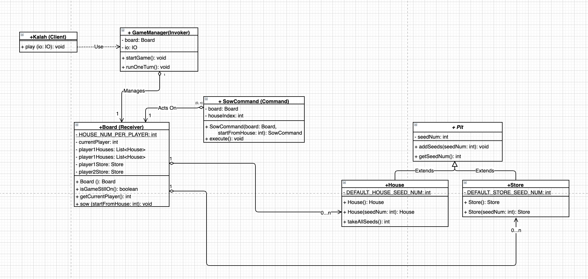

CompSci701 Assignment3 Journal
Challenge 1: Decoupling Consecutive Commands
This is the first challenge I met and I posted it on Piazza too to see if someone has the same problem as I did or has any suggestions.
I am thinking about the assignment 3 and how to design the commands, and I am finding it hard to decouple consecutive commands.
I came up with a handful of command designs and they all seem to have a downside: result of a command execution will have impact on what the next command will be.
For example:
- If we have a command A to let a player play one round, we won’t know what the next command will be (capture? same player another round? the other player’s round), until command A has been executed and made changes to the board.
- If we further refine the command and each command only sows one seed into a certain pit, the invoker will have to know a lot about the status of the pits/board (receiver) to decide what commands should be invoked next.
Such tight coupling seems to be eliminating the benefits of Command Pattern, because the invoker will still need to know a lot about the receiver, or immediately know the result of the command execution to invoke the next command.
Refining my understanding of Command Pattern
The KEY part
The really key part of Command is “packaging up code and it’s parameters for (possibly) later execution”. (Ewan)
Parts that can be varied from case to case
Execute Time
- It may be that the code you want to package up can’t just be put in a concrete command because the way it’s currently written it assumes it’s going to be executed immediately.
- So you may need to adjust it in some way to take account of the fact that it’s possibly going to be executed at a later time.
Parameters
- “parameters” may also be adjusted,
- More parameters may be needed (e.g. containing state that the code needs to execute).
Number of Commands in a Programme
- No limit to the number of different kinds of commands
- No requirement that there be more than one.
Command encapsulating the state of receiver
The command can encapsulate the state of the receiver and call methods of the receiver in execute.
TODOs
- I need a UML diagram to illustrate the programme components, with command, invoker and receiver highlighted.
- I need to examine how the command pattern enhances alterability.
UML version 0.0.1
Thins I am not so happy about:
- Everyone wants to know a bit of Board.
UML version 0.0.2
Thins I am not so happy about:
- Do I use the player or not❓
- Who sows?
What is the Command Pattern?
- The command pattern is a behavioural pattern in which an object is used to represent and encapsulate all the information needed to call a method at a later time.
- This information includes the method name, the object that owns the method (receiver), and values for the method parameters.
UML version 0.1.0
My doubts:
I examined how I could get rid of my long list of helper methods in SowCommand, but still feel that the SowCommand is the best place for them, so I am wondering if you have any suggestions on making it a more efficient/accurate command pattern.
I drew the UML below to help illustrate my design. The SowCommand is still doing one thing - sow seeds on the board according to user input. The 4 fields and 12 helper methods are keeping track of one single execution of sowing, for example, how many seeds are yet to be sowed, and where is the next pit to sow into.
I thought it should still be a valid Command as all the helper methods and field just serve the execute() method, but I start feeling unsure after today’s lecture and discussion with classmates on Piazza.
Ewan’s Responses:
I think technically this looks like a command pattern, but the size of the class (especially number of methods) seems big.
I think that some of what you have in the class could perhaps be moved to a different (possibly new) class, which would then simplify your command class.
When I look at your class I get a sense of “Feature Envy“. Hope that helps, but if not, let us know.
UML version 0.2.0
UML version 0.3.0
Command Pattern
UML version 1.0.0
UML version 1.0.1
Command Pattern -2
Reflections
The key challenge that I met was finding an appropriate place for command pattern where applying the pattern could truly improve the design. I settled on the two concrete commands, QuitCommand and SowCommand, because they are decided by the user input, and applying this design pattern helps decouple the view and method calls on the model.